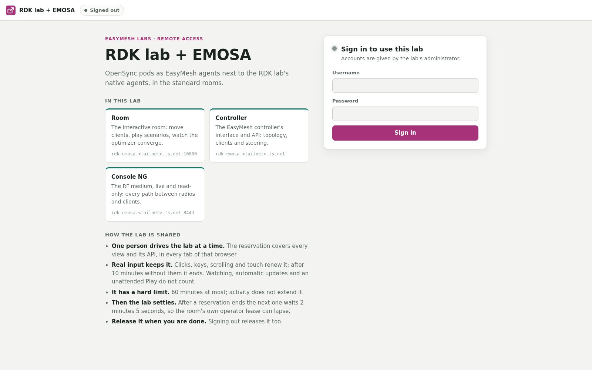
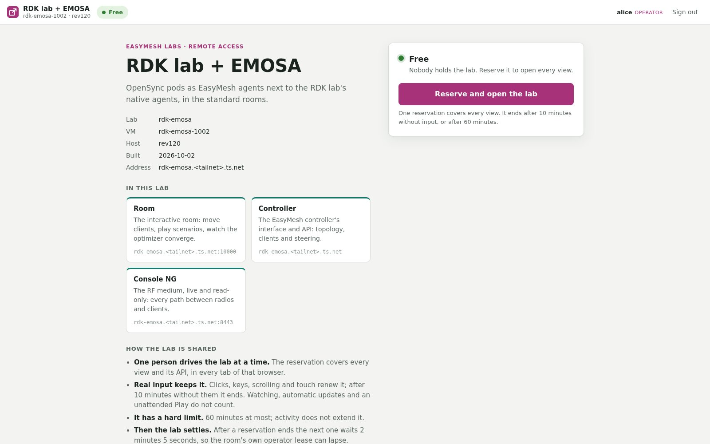
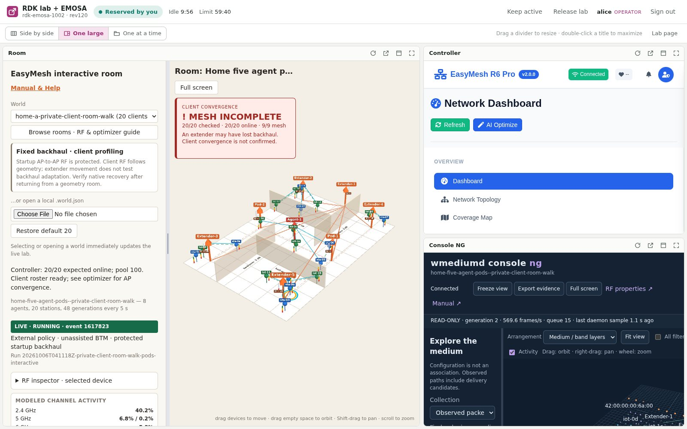
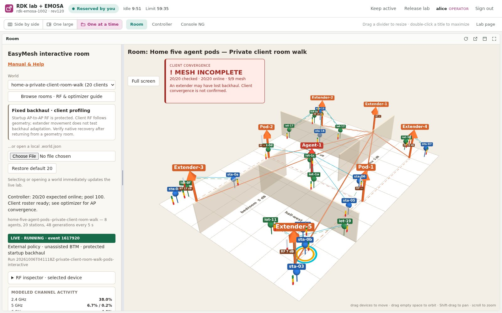
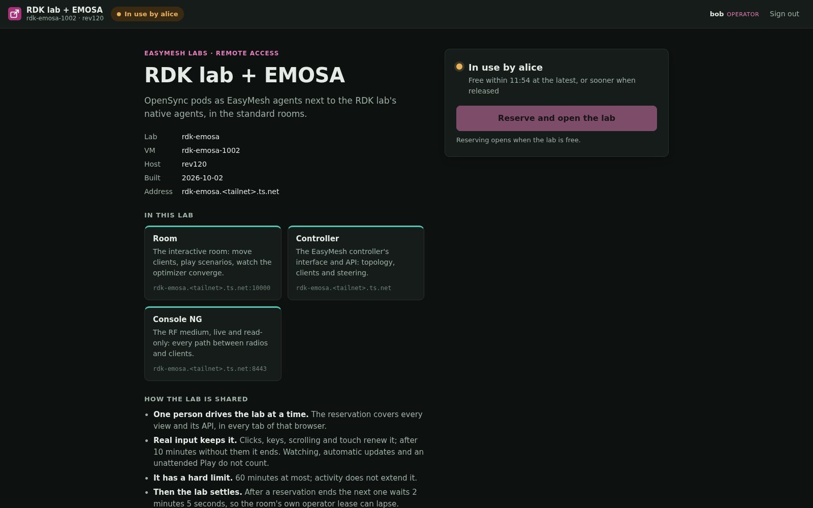
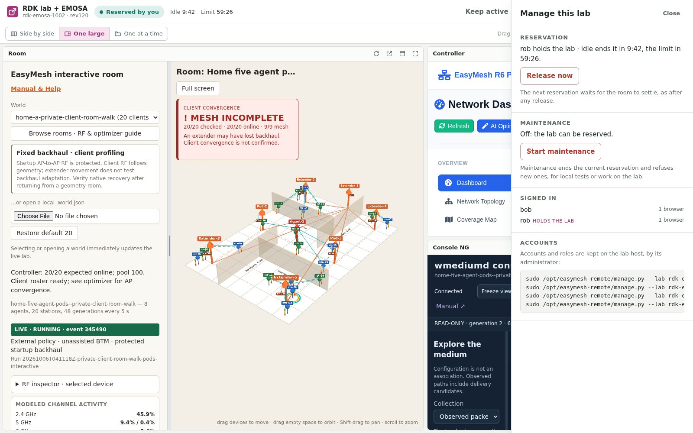

on the tailnet · an operator account
Opens the lab's address https://rdk-emosa.<tailnet>.ts.net/_remote/Signs in, sees whether the lab is free a gateway account today; the Tailscale identity next (Q1)Reserves it: nobody else drives it now one reservation for every interface and APIWorks in every interface in one window side by side · one large · one at a timeReleases it, or it ends by itself 10 min without input · 60 min at most
Built · today
an admin account · the lab's page, Manage
Everything a team member does reserve · use · releaseSees who is signed in, in how many browsers and who holds the labReleases the lab at once the room still settles for 125 sStarts and ends maintenance ends the reservation, refuses new ones
Built · today
SSH to the host · the setup guide
Installs the gateway, once per host sudo bash gateway/install-host.shSets a lab up and adds its people configure --vm · add-user NAME --role adminGives the lab its own address address: one approval in TailscalePublishes it, privately publish --mode privateMoves it to each rebuilt VM retarget --vm rdk-emosa-1005
Built · manage.py
the observer role · proposal section 6
Follows a room someone else drives every interface, read-onlyMany at once, beside the one who drives a review, a demonstrationToday: sees who holds the lab, and until when the lab's page, not its interfaces
Later · step 9
What a team member sees once the lab is theirs: the room , the controller
and Console NG of rdk-emosa side by side, over the tailnet, from anywhere.
an optimizer run · a room suite · requirement Q2
Reserves a lab for hours, not minutes a key, no browser sign-inDrives the controller's and the room's APIs from a developer's own machineReleases it when the run ends the suites reserve the same way
Next · step 6
trusted · requirement Q3
Uses the lab's ports as before 192.168.2.120:22010 · 22011 · 22012Not closed for a private lab bookmarks and rev150's room suites keep workingShares the lab by the same reservation local tools take it: step 6
Built · open
outside the tailnet · Funnel, or a shared device
Does what a team member does a gateway account of their ownGets in by a shared lab device sharing one device shares one labOr by Funnel, with no Tailscale at all public since 6 October
Possible · Funnel
no account, or not holding the lab
Sees the sign-in, nothing behind it 423 on every interface, API and streamA second account sees who holds it "In use by alice", free within 11:50Nothing else of the host on the lab's name its SSH and web server refused
Kept out
the same for every person and, next, every program
One person drives a lab at a time a mesh is shared state: one medium, one controller, one set of clientsIt covers every interface and API in every tab of that browser; a second browser of the same account is turned awayReal input keeps it clicks, keys, scrolling, touch in any view; watching and an unattended Play do not countIt has a hard limit 60 minutes; "Keep active" covers watching, never the limitThe room's own operator is respected no reservation while someone holds the room's lease locallyThen the lab settles for the next person 125 s: longer than the room's longest lease
The rules
the proposal's steps, 6 October
Built a lab's own address · the lab's page · admins · retarget · the open lab networkNext the team's Tailscale sign-in · programs and suites with keysLater the other labs · the directory · watchers · the queue · partners
Status
1 A team member's hour with the labFrom a laptop anywhere, on the tailnet. Nothing to install but Tailscale.
Opens https://rdk-emosa.<tailnet>.ts.net/_remote/: the lab's card, what it is, and the rules.
Signs in. The page says Free , or who holds the lab and when it is free at the latest.
Presses Reserve and open the lab . The gateway checks that nobody holds the room locally, then the lab is theirs.
Works: the room, the controller and Console NG side by side; drags a divider, maximizes the room, sends a colleague the layout's link.
Steps away for coffee: the idle timer counts down from 10 minutes; any click in any view renews it.
Presses Release lab . Every view closes; the next person can reserve 125 s later.
2 An admin steps inSomeone left a reservation running, or the lab needs local work.
Opens Manage on the lab's page: who is signed in, in how many browsers, who holds the lab and for how long.
Release now : the holder's views close at once; the lab settles, then it is free.Start maintenance before a local suite or work on the VM: the reservation ends and nobody can take a new one.End maintenance when done; the page tells everyone the lab is free again.
3 The operator, from install to rebuildOn the lab host over SSH, with manage.py (/opt/easymesh-remote).
install-host.sh, once per host: the packages, a service account, the units.--lab rdk-emosa configure --vm rdk-emosa-1002: the lab named after its configuration, its VM's published ports read.add-user rob --role admin, add-user alice: a password each, typed, never on a command line.address: the lab's own Tailscale device; one link to approve, once.publish --mode private: the lab's three addresses, each checked to reach the gateway.After every rebuild, once the new VM is accepted: retarget --vm rdk-emosa-1005. The address, the accounts and the state stay.
4 A program, nextRequirement Q2: an optimizer developed on someone's own machine, run against a lab.
The developer asks an admin for a key for one lab.
The program reserves the lab with it, for the length of the run: hours, not the 60 minutes a person gets.
It reads the controller's topology and the room's state, and steers clients, through the same addresses.
It releases the lab at the end; the room suites on the host reserve it the same way, in place of maintenance.

1 · The welcome · signed out: what the lab is, its interfaces, the rules, the sign-in
2 · Free · signed in: the VM, the host, the build date, and the reserve button
3 · One large · the room beside the controller and Console NG; the idle and limit timers in the bar
4 · One at a time · the room alone, the others a tab away and still live
5 · In use · bob, meanwhile: who holds the lab and when it is free at the latest
6 · Manage · an admin's panel (a test run against rdk-emosa-1005's interfaces)
The requirements · confirmed 6 October
Question Answer
Q1 Who uses a lab remotely? the team now, on the tailnet; named partners later Q2 What do they do? click through the interfaces now; run their own code against a lab soon Q3 Is the lab network trusted? yes: closed only for a public lab Q4 After a rebuild, which VM is the lab? the newest accepted one, by retarget Q5 Public access? public through Funnel since 6 October, the LAN kept open
Open
The team still signs in with a gateway passwordstep 5: the Tailscale identity the tailnet already checked
Programs and suites cannot reserve a labstep 6: keys and reservations of hours; until then a suite runs under maintenance
A rebuild still needs an operatorrdk-emosa moved to 1005 by hand (retarget); the lab's build should run it
Only the RDK labsstep 7: the prplMesh and OpenSync labs name their interfaces differently
One lab, one person driving, from anywhere
How it works underneath, from the browser to the lab's VM, is the other poster:
how a lab is reached . Everything here is in
easymesh-remote .